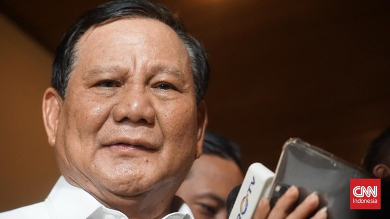

Bakal calon presiden Koalisi Indonesia Maju (KIM) Prabowo Subianto menyebut sudah merancang master plan dengan tim Presiden Joko Widodo (Jokowi) soal kebangkitan bangsa Indonesia. Hal itu diungkapkan Prabowo dalam acara deklarasi Induk KUD mendukung Prabowo Subianto-Gibran Rakabuming Raka di Hotel Millenium, Jakarta Pusat.Saudara-saudara sekalian, saudara mendukung saya sebagai calon Presiden. Saya bersama tim, bersama tim bapak Joko Widodo, bersama tim dari koalisi yang besar, kami sudah menyusun suatu cetak biru, suatu road map, suatu master plan, yang menurut saya ini adalah jalan menuju kebangkitan bangsa Indonesia,
kata Prabowo, dikutip dari detikcom.
Prabowo merasa optimistis bia menyelesaikan berbagai persoalan di Indonesia, seperti mengentas kemiskinan hingga kekurangan gizi di Indonesia. "Saya sangat optimis, kita akan menyelesaikan masalah-masalah besar bangsa Indonesia. Kita akan hilangkan kemiskinan dari bumi Indonesia, kita akan hilangkan kurang gizi dari bumi Indonesia," ucapnya. Selain itu, Prabowo juga menegaskan permasalahan kurang gizi dan stunting tidak boleh ada lagi di Indonesia. Dia juga kembali mengatakan merasa optimistis dalam menyelesaikan masalah-masalah tersebut. "Tidak boleh ada ibu dan anak Indonesia yang kurang gizi. Tidak boleh ada stunting di Indonesia, dan itu akan mampu kita laksanakan. Kita akan perbaiki yang harus diperbaiki," tegasnya.memasok pangan bagi ibu dan anak demi mencegah stunting. Kementerian Kesehatan mencatat prevalensi stunting di Indonesia mencapai 21,6 persen di tahun 2022. Sementara itu, Center for Indonesian Policy Studies (CIPS) menyebut ada 21 juta warga Indonesia kekurangan gizi dan 21,6 persen anak stunting. Presiden Joko Widodo (Jokowi) menargetkan stunting akan turun hingga 14 persen di tahun 2024. Jokowi memerintahkan semua anak buahnya memperhatikan asupan gizi bagi ibu hamil dan anak-anak.